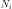
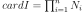
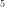
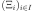

GaussProductExperiment¶
(Source code, png, hires.png, pdf)
- class GaussProductExperiment(*args)¶
Gauss product experiment.
- Available constructors:
GaussProductExperiment(marginalDegrees)
GaussProductExperiment(distribution)
GaussProductExperiment(distribution, marginalDegrees)
- Parameters
- marginalDegreessequence of positive int
Numbers of points  for each direction. Then, the total number of points generated is . If not specified, each value is .
- distribution :
Distribution
 of dimension
of dimension  with an independent copula.
with an independent copula.
See also
Notes
The number of points for each direction doesn’t change and the
generate()method always gives the same sample.Examples
>>> import openturns as ot >>> distribution = ot.ComposedDistribution([ot.Exponential(), ot.Triangular(-1.0, -0.5, 1.0)]) >>> marginalDegrees = [3, 2] >>> experiment = ot.GaussProductExperiment(distribution, marginalDegrees) >>> print(experiment.generate()) [ X0 X1 ] 0 : [ 0.415775 -0.511215 ] 1 : [ 2.29428 -0.511215 ] 2 : [ 6.28995 -0.511215 ] 3 : [ 0.415775 0.357369 ] 4 : [ 2.29428 0.357369 ] 5 : [ 6.28995 0.357369 ]
Methods
generate()Generate points according to the type of the experiment.
Generate points and their associated weight according to the type of the experiment.
Accessor to the object's name.
Accessor to the distribution.
getId()Accessor to the object's id.
Get the marginal degrees.
getName()Accessor to the object's name.
Accessor to the object's shadowed id.
getSize()Accessor to the size of the generated sample.
Accessor to the object's visibility state.
hasName()Test if the object is named.
Ask whether the experiment has uniform weights.
Test if the object has a distinguishable name.
setDistribution(distribution)Accessor to the distribution.
setMarginalDegrees(marginalDegrees)Set the marginal degrees.
setName(name)Accessor to the object's name.
setShadowedId(id)Accessor to the object's shadowed id.
setSize(size)Accessor to the size of the generated sample.
setVisibility(visible)Accessor to the object's visibility state.
- __init__(*args)¶
- generate()¶
Generate points according to the type of the experiment.
- Returns
- sample
Sample Points  which constitute the design of experiments with
 . The sampling method is defined by the nature of
the weighted experiment.
. The sampling method is defined by the nature of
the weighted experiment.
- sample
Examples
>>> import openturns as ot >>> ot.RandomGenerator.SetSeed(0) >>> myExperiment = ot.MonteCarloExperiment(ot.Normal(2), 5) >>> sample = myExperiment.generate() >>> print(sample) [ X0 X1 ] 0 : [ 0.608202 -1.26617 ] 1 : [ -0.438266 1.20548 ] 2 : [ -2.18139 0.350042 ] 3 : [ -0.355007 1.43725 ] 4 : [ 0.810668 0.793156 ]
- generateWithWeights()¶
Generate points and their associated weight according to the type of the experiment.
- Returns
Examples
>>> import openturns as ot >>> ot.RandomGenerator.SetSeed(0) >>> myExperiment = ot.MonteCarloExperiment(ot.Normal(2), 5) >>> sample, weights = myExperiment.generateWithWeights() >>> print(sample) [ X0 X1 ] 0 : [ 0.608202 -1.26617 ] 1 : [ -0.438266 1.20548 ] 2 : [ -2.18139 0.350042 ] 3 : [ -0.355007 1.43725 ] 4 : [ 0.810668 0.793156 ] >>> print(weights) [0.2,0.2,0.2,0.2,0.2]
- getClassName()¶
Accessor to the object’s name.
- Returns
- class_namestr
The object class name (object.__class__.__name__).
- getDistribution()¶
Accessor to the distribution.
- Returns
- distribution
Distribution Distribution used to generate the set of input data.
- distribution
- getId()¶
Accessor to the object’s id.
- Returns
- idint
Internal unique identifier.
- getMarginalDegrees()¶
Get the marginal degrees.
- Returns
- marginalDegrees
Indices Numbers of points for each direction.
- marginalDegrees
- getName()¶
Accessor to the object’s name.
- Returns
- namestr
The name of the object.
- getShadowedId()¶
Accessor to the object’s shadowed id.
- Returns
- idint
Internal unique identifier.
- getSize()¶
Accessor to the size of the generated sample.
- Returns
- sizepositive int
Number of points constituting the design of experiments.
- getVisibility()¶
Accessor to the object’s visibility state.
- Returns
- visiblebool
Visibility flag.
- hasName()¶
Test if the object is named.
- Returns
- hasNamebool
True if the name is not empty.
- hasUniformWeights()¶
Ask whether the experiment has uniform weights.
- Returns
- hasUniformWeightsbool
Whether the experiment has uniform weights.
- hasVisibleName()¶
Test if the object has a distinguishable name.
- Returns
- hasVisibleNamebool
True if the name is not empty and not the default one.
- setDistribution(distribution)¶
Accessor to the distribution.
- Parameters
- distribution
Distribution Distribution used to generate the set of input data.
- distribution
- setMarginalDegrees(marginalDegrees)¶
Set the marginal degrees.
- Parameters
- marginalDegreessequence of positive int
Numbers of points for each direction.
- setName(name)¶
Accessor to the object’s name.
- Parameters
- namestr
The name of the object.
- setShadowedId(id)¶
Accessor to the object’s shadowed id.
- Parameters
- idint
Internal unique identifier.
- setSize(size)¶
Accessor to the size of the generated sample.
- Parameters
- sizepositive int
Number of points constituting the design of experiments.
- setVisibility(visible)¶
Accessor to the object’s visibility state.
- Parameters
- visiblebool
Visibility flag.
 .
.{kind=link}
{kind=link}